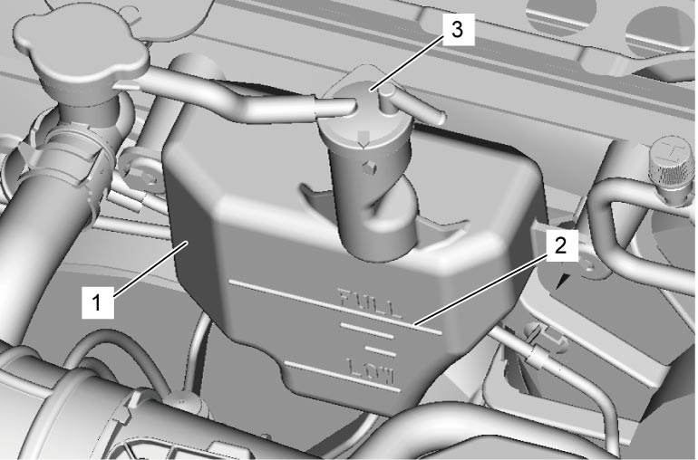

1F
| Cooling System Refilling |
Before performing the following procedure, observe Precautions for Cooling System:K14C.
1)Fill reservoir (1) with coolant up to “FULL” mark (2).
2)Install reservoir cap (3) on reservoir.


 "Expand image")
3)Fill radiator with coolant up to bottom of radiator filler neck and install radiator cap. 
4)Run engine at idle speed until radiator fan motor is operated.
5)Stop engine and wait until engine cools down to avoid getting burned.
6)Add coolant to radiator up to bottom of radiator filler neck, and install radiator cap.
7)Repeat Step 4) – 6).
8)Check that coolant level in reservoir is at “FULL” mark. If coolant is insufficient, add coolant.
9)Check cooling system for leakage.